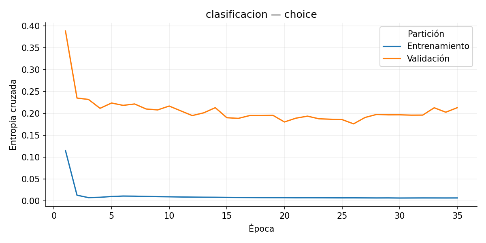
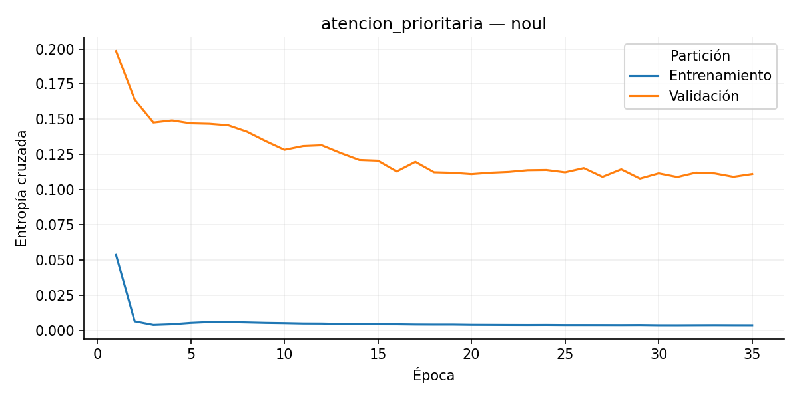
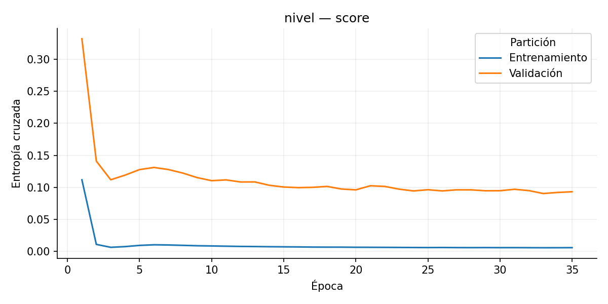
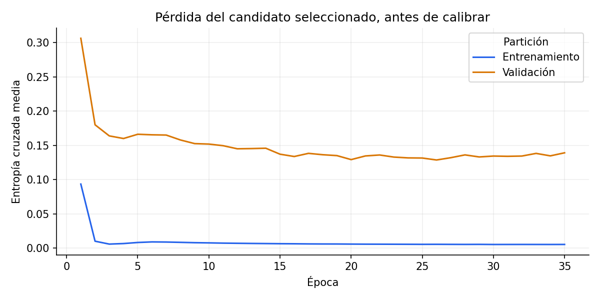
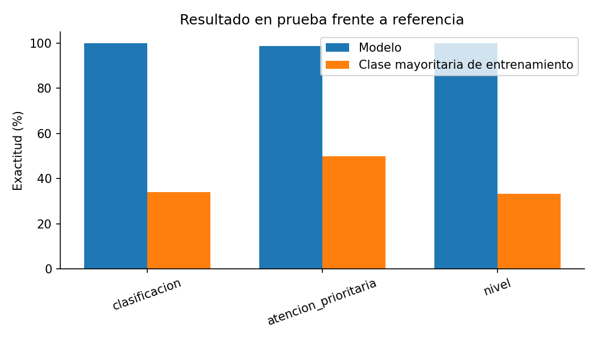
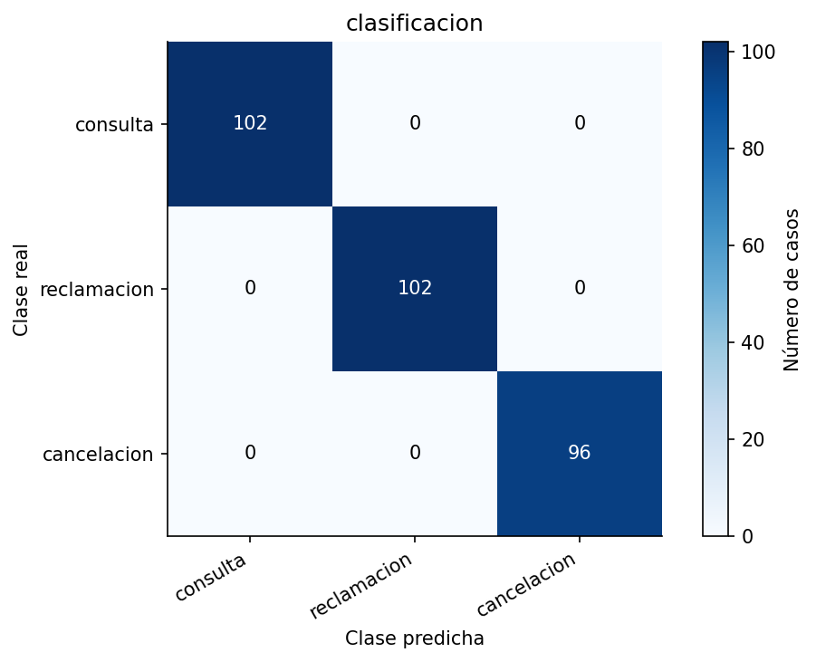
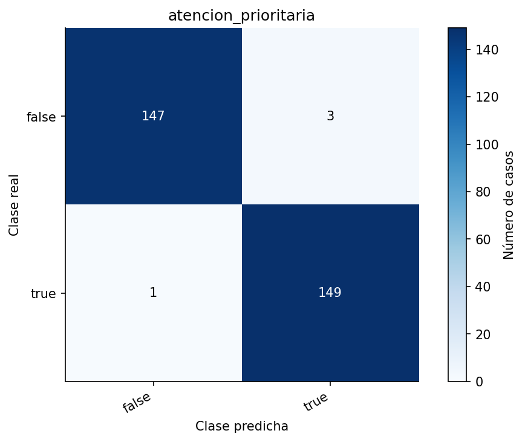
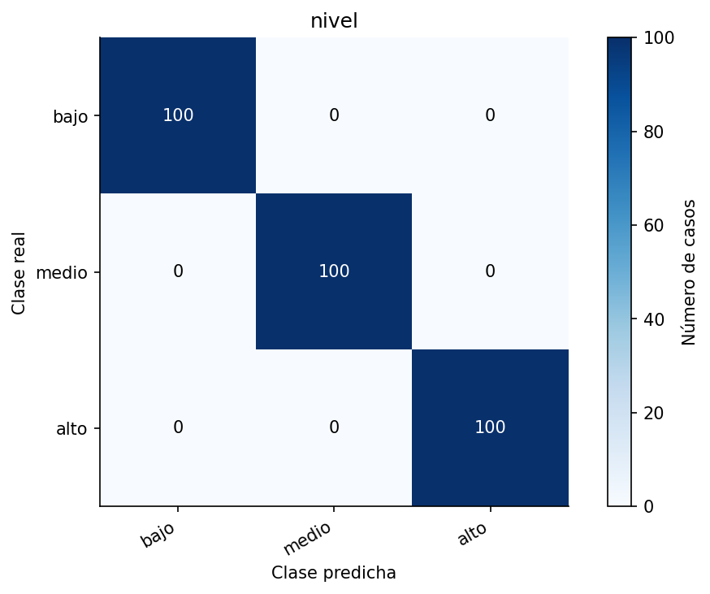
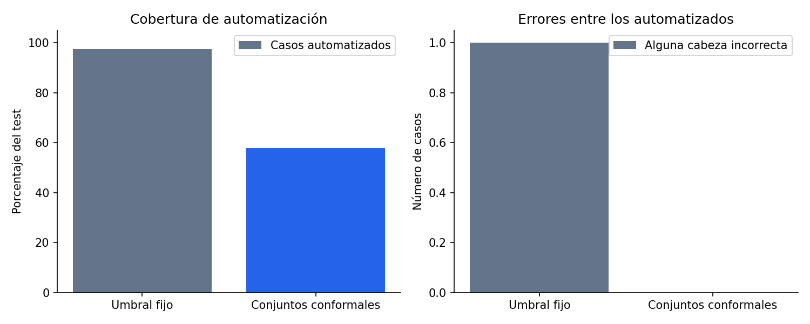

Cerebro de decisiones: Comercio: triaje de consultas y reclamaciones
Prueba con 300 casos. Pérdida media después de calibrar: 0.051132.
Estos datos proceden del generador sintético. Se reservan expresiones diferentes por partición, pero comparten las reglas del generador. No acreditan rendimiento en una industria real.
La prueba funcional confirma que el modelo guardado conserva sus predicciones al recargarlo. La exactitud indica cuántas etiquetas coincide con los datos; no prueba que las acciones causen un resultado favorable.
Pregunta
Exactitud
Referencia
Diferencia
Loss
¿Cuál es la necesidad principal del cliente?
100.0%
34.0%
+66.0 pp
0.008117
¿Existe un plazo explícito que requiere atención hoy o en las próximas horas?
98.7%
50.0%
+48.7 pp
0.1451
¿Cuál es el alcance del impacto operativo o económico descrito?
100.0%
33.3%
+66.7 pp
0.0001551
Choice, Score y Noul
Choice elige una opción. Score estima una posición entre 0 y el último nivel de la rúbrica; admite decimales. Noul estima la probabilidad de que una afirmación sea verdadera: 0,5 indica ambigüedad, no un grado intermedio.
Confidence usa 1 menos la entropía normalizada. No es probabilidad de acierto ni la fórmula privada de Jev. La revisión exige el umbral min_probability y, en modelos 0.13, un conjunto conformal de una sola opción. Las matrices de Score comparan el nivel más probable; MAE evalúa el score continuo. Brier y loss: menor es mejor.
Pregunta
Tipo
Loss
Brier
Lectura
clasificacion
choice
categorical_cross_entropy: 0.00812
0.00128
Brier multiclase: suma de errores cuadráticos por caso.
atencion_prioritaria
noul
binary_cross_entropy: 0.14512
0.03166
Brier binario: error cuadrático de la probabilidad de verdadero.
nivel
score
categorical_cross_entropy: 0.00016
0.00000
MAE de score: 0.0002; RMSE: 0.0017; MAE referencia: 0.6670

Pérdida de clasificacion por época, antes de calibrar.

Pérdida de atencion_prioritaria por época, antes de calibrar.

Pérdida de nivel por época, antes de calibrar.
Aprendizaje y evaluación

Una pérdida menor representa más probabilidad asignada a las etiquetas correctas. Una brecha creciente entre entrenamiento y validación puede indicar sobreajuste.

La referencia predice la clase más frecuente observada en entrenamiento. Ganarle es una comparación inicial, no una validación de producción.

Filas: etiquetas reales. Columnas: predicciones. Las celdas fuera de la diagonal son errores.

Filas: etiquetas reales. Columnas: predicciones. Las celdas fuera de la diagonal son errores.

Filas: etiquetas reales. Columnas: predicciones. Las celdas fuera de la diagonal son errores.
Aseguramiento: AutoEvals e incertidumbre: FAIL
Evaluación local con AutoEvals 0.3.0. ExactMatch es el evaluador de la librería; BrierQuality y OrdinalCloseness son scores propios. Sin juez remoto ni envío a Braintrust.
Las barras son desviación entre semillas, no intervalos de confianza. Keep acepta una configuración para continuar investigando; no autoriza producción.
Experimento
Hipótesis
Estado
Motivo
0
Baseline con configuración original y semillas fijadas.
keep
baseline established; not a quality approval
1
Reducir sobreajuste aumentando regularización; conservar el resto.
Evaluar menor capacidad para mejorar generalización.
discard
no_mean_loss_improvement
Cuándo automatizar y cuándo revisar
Comparación sobre las mismas probabilidades de test. Un error cuenta si alguna cabeza falla; no mide el resultado causal de la acción.
Política
Automatizados
Revisión
Errores automatizados
Exactitud selectiva conjunta
Umbral fijo
292/300
2.7%
1
99.7%
Conjuntos conformales
174/300
42.0%
0
100.0%

Más revisión puede reducir errores. Derivar todo no constituye una mejora útil; hay que evaluar ambas medidas.
Gate de incertidumbre: FAIL — promoción bloqueada
Cobertura conjunta observada de los conjuntos: 74.0%. Es una medida distinta de exactitud selectiva. Los conjuntos requieren datos intercambiables; no garantizan detectar mensajes fuera de dominio o contradicciones. Calibration se dividió en 150 filas para temperatura y 150 para conjuntos.
Diversidad y separación de datos
Partición
Filas
Textos de tarea distintos
Combinaciones de etiquetas
train
1100
1084
18
validation
300
285
18
calibration
300
285
18
test
300
289
18
Sin alertas en estas comprobaciones estructurales.
Textos idénticos entre particiones: 0. Combinaciones globales: 18. Contar textos y medir asociación de etiquetas no acredita cobertura de casos reales.
Dependencia del texto y los números
Pregunta
Modelo completo
Sin texto
Sin números
clasificacion
100.0%
34.0%
100.0%
atencion_prioritaria
98.7%
50.0%
98.7%
nivel
100.0%
33.3%
100.0%
Se anulan bloques de características del mismo modelo; no se reentrena. Esta prueba mide sensibilidad a la eliminación de entradas, no causalidad ni importancia de cada palabra.
Ejemplos adicionales de incertidumbre en entrenamiento: 0. Cuando se usan etiquetas distribuidas, la pérdida de entrenamiento incluye su incertidumbre irreducible.
Validación: inicio 0.3062, final 0.1391. Se conserva la mejor época, no necesariamente la última. La diferencia con test también depende de sus textos y de la calibración; no debe interpretarse como mejora temporal.
Interpretación en escenarios
Las acciones se proponen para el flujo de trabajo; no se ejecutan. Los criterios y preguntas proceden del contrato y no son explicaciones causales aprendidas.
¿Cuál es la necesidad principal del cliente? Expresa intención de cancelar la compra.. Probabilidad de la opción: 100.0%; confianza de distribución: 100.0%. ¿Existe un plazo explícito que requiere atención hoy o en las próximas horas? Requiere revisión. Probabilidad de que la afirmación sea verdadera: 29.5%. Cerca de 0,5 indica ambigüedad, no intensidad. ¿Cuál es el alcance del impacto operativo o económico descrito? Posición en la rúbrica: 2.000 de 2; confianza de distribución: 100.0%.
Acción propuesta: revision_humana
Revisión requerida por umbral o conjunto de predicción en: atencion_prioritaria
¿Cuál es la necesidad principal del cliente? Expresa intención de cancelar la compra.. Probabilidad de la opción: 100.0%; confianza de distribución: 100.0%. ¿Existe un plazo explícito que requiere atención hoy o en las próximas horas? Probabilidad de que la afirmación sea verdadera: 96.9%. Cerca de 0,5 indica ambigüedad, no intensidad. ¿Cuál es el alcance del impacto operativo o económico descrito? Posición en la rúbrica: 2.000 de 2; confianza de distribución: 100.0%.
El plazo sigue siendo flexible, sin urgencia. La decisión final es anular mi compra. No hay trabajo detenido ni pérdidas relevantes.
contexto
Pedido PED-RZuS-64531; producto: silla de oficina; empresa: Dalila Ballester Montaña S.L.; ciudad: Ourense.
¿Cuál es la necesidad principal del cliente? Expresa intención de cancelar la compra.. Probabilidad de la opción: 100.0%; confianza de distribución: 100.0%. ¿Existe un plazo explícito que requiere atención hoy o en las próximas horas? Probabilidad de que la afirmación sea verdadera: 11.0%. Cerca de 0,5 indica ambigüedad, no intensidad. ¿Cuál es el alcance del impacto operativo o económico descrito? Posición en la rúbrica: 0.000 de 2; confianza de distribución: 100.0%.
La interrupción total genera pérdidas importantes. Me interesa consultar las tallas y medidas del catálogo. No existe una fecha límite para resolverlo.
contexto
Pedido PED-BVtT-18986; producto: silla de oficina; empresa: Garmendia y Román S.Com.; ciudad: Navarra.
¿Cuál es la necesidad principal del cliente? Solicita información del producto.. Probabilidad de la opción: 100.0%; confianza de distribución: 100.0%. ¿Existe un plazo explícito que requiere atención hoy o en las próximas horas? Requiere revisión. Probabilidad de que la afirmación sea verdadera: 51.4%. Cerca de 0,5 indica ambigüedad, no intensidad. ¿Cuál es el alcance del impacto operativo o económico descrito? Posición en la rúbrica: 2.000 de 2; confianza de distribución: 100.0%.
Acción propuesta: revision_humana
Revisión requerida por umbral o conjunto de predicción en: atencion_prioritaria
No existe una fecha límite para resolverlo. Los equipos completos están bloqueados sin alternativa. Mi reclamación corresponde a una falla del artículo.
¿Cuál es la necesidad principal del cliente? Requiere revisión. Reclama un problema con su compra.. Probabilidad de la opción: 97.5%; confianza de distribución: 89.1%. ¿Existe un plazo explícito que requiere atención hoy o en las próximas horas? Probabilidad de que la afirmación sea verdadera: 9.8%. Cerca de 0,5 indica ambigüedad, no intensidad. ¿Cuál es el alcance del impacto operativo o económico descrito? Posición en la rúbrica: 2.000 de 2; confianza de distribución: 100.0%.
Acción propuesta: revision_humana
Revisión requerida por umbral o conjunto de predicción en: clasificacion